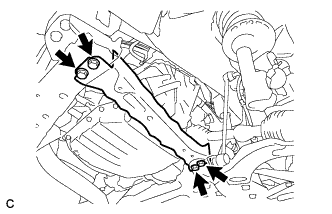
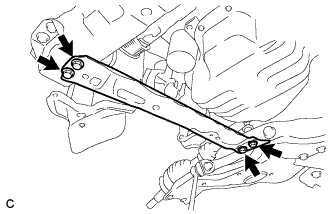
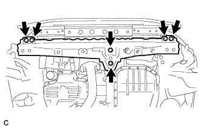
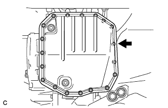
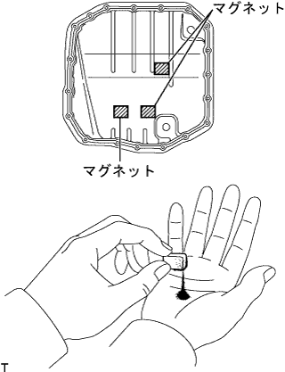

Transaxle Oil Pan Removal |
| 1. Drain CVT Fluid |
Using a socket hexagon wrench 10, remove the drain plug and gasket, and drain the fluid.
Using a socket hexagon wrench 10, tighten the drain plug with a new gasket.
| 2. Remove Engine Under Cover NO.1 |
Remove the 6 bolts and 7 clips, and remove the engine under cover No.1.
| 3. Remove Engine Under Cover |
Remove the 4 bolts and 4 screws, and remove the engine under cover.
| 4. Remove Engine Under Cover Rear LH |
Remove the 5 clips and the engine under cover rear LH.
| 5. Remove Engine Under Cover Rear RH |
| 6. Remove Engine Front Mounting Bracket Reinforcement Lower |
 |
Remove the 2 bolts and the engine front mounting bracket reinforcement lower.
| 7. Remove Front Suspension Member Reinforcement LH |
 |
Remove the 4 bolts and the front suspension member reinforcement LH.
| 8. Remove Front Suspension Member Reinforcement RH |
 |
Remove the 4 bolts and remove the front suspension member reinforcement RH.
| 9. Remove Front Cross Member Sub-assembly |
 |
Support the oil pan with a transmission jack using a wooden block or similar.
 |
Remove the 6 bolts and front cross member.
| 10. Remove Transaxle Oil Pan Sub-assembly (CVT) |
 |
Remove the 19 bolts and remove the transaxle oil pan.
 |
Remove the oil pan gasket and 3 magnets from the oil pan.